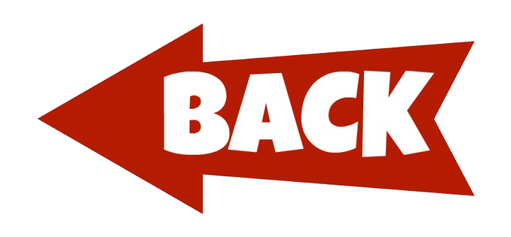

Banjo Kazooie is een 3D platformspel ontwikkeld door RareLtd.
Banjo Kazooie is oorspronkelijk uitgegeven door Nintendo voor de Nintendo 64.
In het spel speel je als het beer en vogel duo: Banjo en Kazooie,
Banjo en Kazooie moeten banjo's zusje redden van de boze heks Gruntilda,
die overal in haar grot vallen en puzzels geplaatst hebt.
Om verder te komen in het spel moet je Puzzel stukjes, muziek noten en nog veel meer
verzamelen.
Maar je moet ook de puzzels in de grot compleet maken om de level deuren te openen
en genoeg muziek noten te sparen om de noten deuren te openen om verder te komen in de grot van de boze heks Gruntilda.